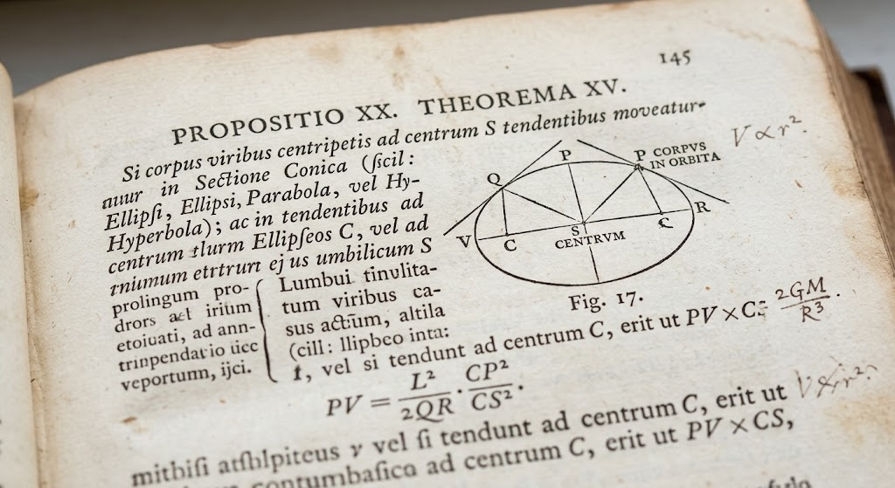

📘 Capacité B.O. : établir et exploiter la 3e loi de Kepler (cas circulaire)
En 1687, Isaac Newton publie les Philosophiæ Naturalis Principia Mathematica. Dans la Proposition XX, il démontre une relation valable pour toute trajectoire soumise à une force centrale — ellipse, parabole ou hyperbole. Restait à en extraire le cas particulier qui intéresse ce carnet : celui d'une orbite circulaire.

Principia, Proposition XX, Théorème XV (1687)
🔍 Observez le bureau de Newton ci-dessous et survolez-le pour révéler la suite du raisonnement.
Étape 1 — Réduction au cas circulaire
En partant de la 2e loi de Newton et de l'expression de l'accélération en repère de Frenet pour un mouvement circulaire, laquelle des trois relations suivantes correspond à la 3e loi de Kepler établie dans ce cas particulier ?
F = m · a²
v = GM / r²
T² / a³ = 4π² / (GM)
Étape 2 — Exploiter la loi sur le Système solaire
Question 3.1 : Le tableau ci-dessous donne le demi-grand axe a (en UA) et la période T (en années) de plusieurs planètes. Vérifiez que le rapport T²/a³ est bien constant, puis calculez la période manquante de Jupiter.
Planète
a (UA)
T (années)
T²/a³
Mercure
0,39
0,241
1,00
Vénus
0,72
0,615
1,01
Terre
1,00
1,000
1,00
Mars
1,52
1,881
1,01
Jupiter
5,20
?
1,00
📝 Preuve de Newton reconstituée !
TJupiter ≈ 11,9 années — la 3e loi de Kepler est vérifiée sur tout le Système solaire.